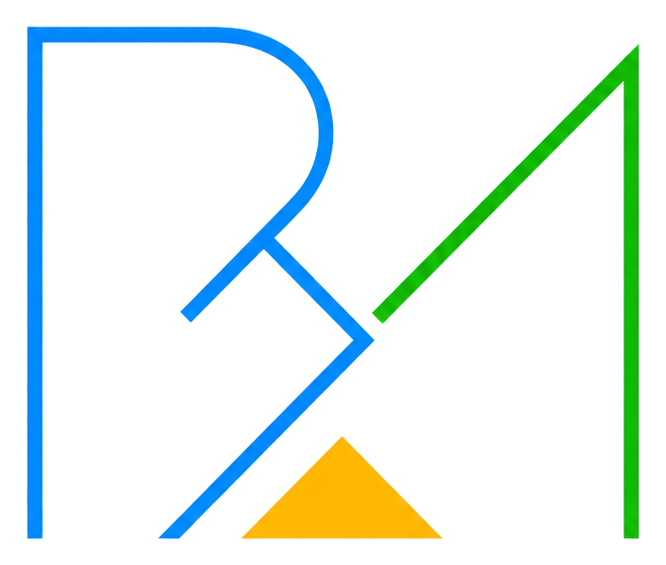

Insights
Practical notes on scientific strategy, evidence planning, medical devices, CRO collaboration and business execution.

Pharma Biotech Medical devices CRO
News
Practical notes on scientific strategy, evidence planning, medical devices, CRO collaboration and business execution.
Future announcements, service updates and Bion Med development notes will be published here.
Focused observations for pharma, biotech, medical device companies and CRO teams navigating complex decisions.